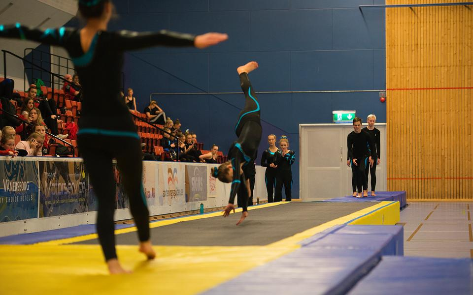
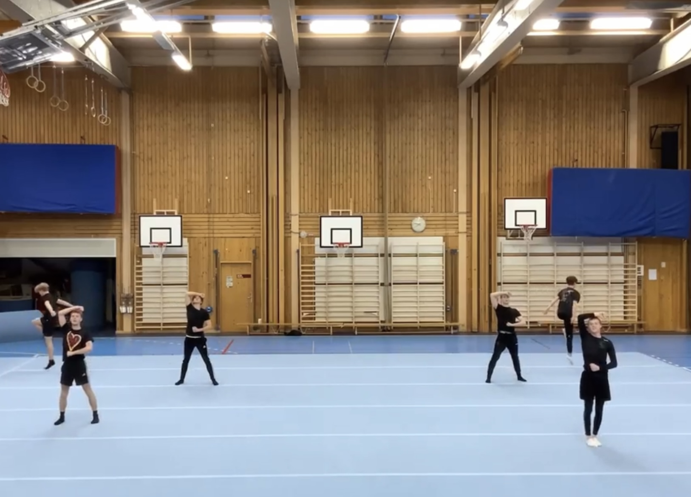

"Gymnastik är en mycket bra och rolig sport. Kroppen lär sig grundläggande motoriska kunskaper som andra sporter inte ger och är därför den bästa sporten i världen. ALLA BORDE GÅ PÅ DEN!"
- Albert Einstein
Trampett är ett redskap där 6 personer från varje lag springer till denna lilla studsmatta för att försöka få så mycket kraft som möjligt för att göra coola volter
Tumbling är en lång stumm studsig matta som man springer och gör serier av olika coola volter efter varandra på. T.ex flickisar, dubbelvolter och rondater
Fristånde är den viktigaste grenen inom truppgymnastik eftersom att det bestämmer vilka som får vara med på tumbling och trampet. Friståndet är en koreografi, likt en dans, där man även utför andra enka volter och svårigheter.
